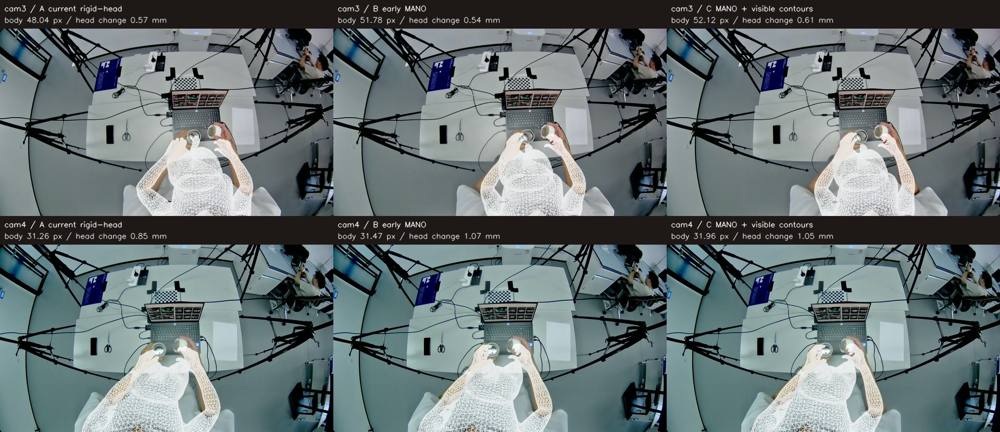
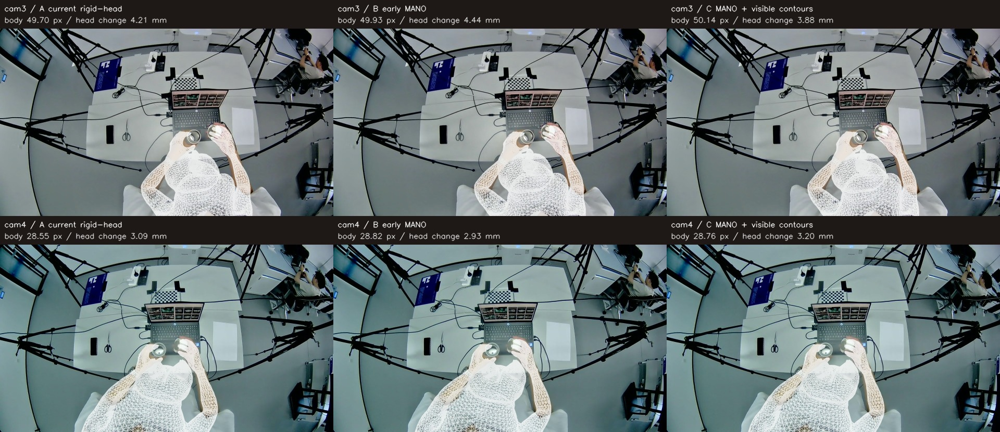
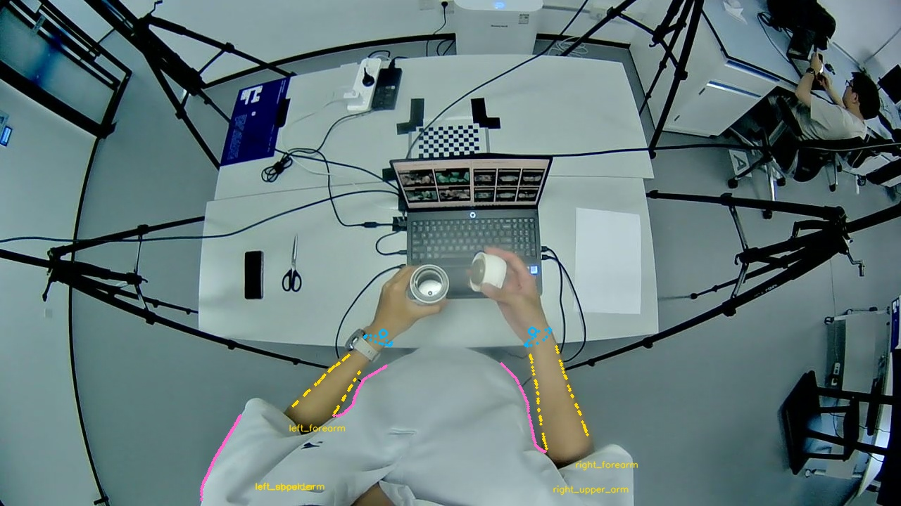
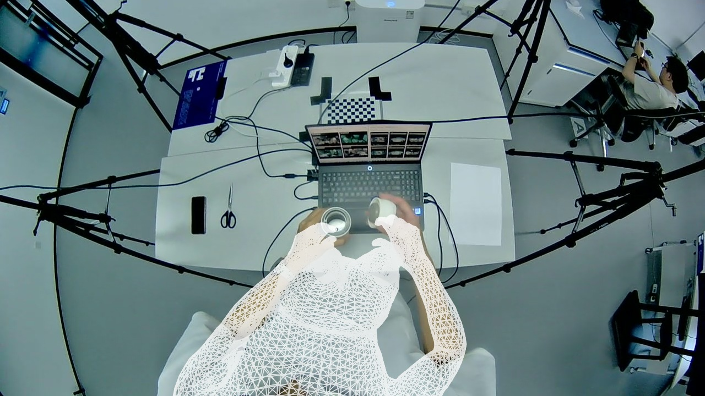
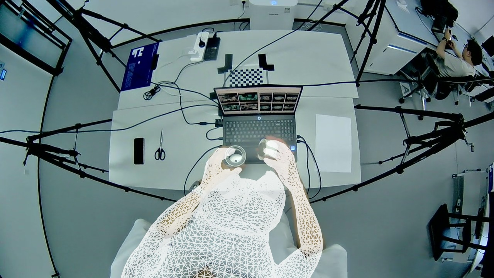
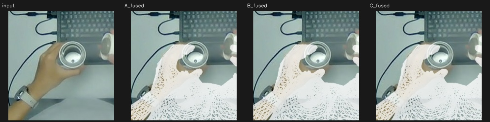
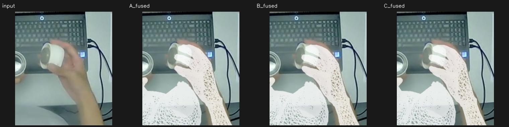

中心两帧：提前 MANO 与肩臂轮廓 · A/B/C 对照
cam3 19.416 s / cam4 19.407 s，每帧新跑 A、B、C 三条完整优化与融合流程。神经网络预测缓存不变，原13类候选身体点不变。没有人工标注，没有逐帧调参。
A沿用刚体头部软参考；B仅增加身体阶段的MANO腕点、掌根和腕口投影；C在B基础上增加肩部、上臂、前臂的可见轮廓。后续优化与原接缝算法保持相同。肩部/上臂主要由衣服覆盖，因此只施加较弱的越界限制；cam4右肩因可靠边界不足自动停用。
中心两帧A/B/C六次完整优化均完成。B、C在身体阶段降低了新增MANO和轮廓诊断损失，但经过原后续流程，最终投影又接近A；最终身体、肩点、手部汇总RMSE均未优于A，局部交叉通过数均为1/2。当前实现未显示足够收益，不替换默认流程。肩部观测主要是衣服范围，不能据此声称准确约束了裸露肩部表面。
报告与方法 · 全部数据 · CSV · 重载与A复现验证 · 单文件离线版 · 完整结果包
| 方案 | 最终身体RMSE / 22点 | 肩点RMSE / 4点 | 手部RMSE / 84点 | 局部交叉通过 |
|---|
| A：当前刚体头部参考流程 | 39.59 px | 84.73 px | 10.59 px | 1/2 |
| B：提前加入 MANO | 39.83 px | 85.46 px | 10.82 px | 1/2 |
| C：B＋肩部—上臂—前臂可见轮廓 | 39.92 px | 85.63 px | 10.67 px | 1/2 |
误差均参考相同Sapiens2/WiLoR自动点，不是人工真值。RMSE合并所有点平方误差后开方。头部位移相对各帧刚体结果；局部交叉为三维非共面相交三角面配对数，检查调整的前臂/接缝对全表面，不是完整全身无碰撞证明。

身体阶段 A / B / C；上cam3，下cam4
最终融合 A / B / C；上cam3，下cam4cam4 · 19.407 s
身体阶段B/C略改变前臂位置，最终肩臂和双手与A很接近，没有观察到明确的肩部改善。身体RMSE A/B/C为28.55/28.82/28.76px，手部9.91/10.09/10.14px，左右局部交叉均为0。C左肩仅有衣服范围，右肩无足够可靠边界而停用；未出现新的大幅头部外扩。
| 方案 | 身体阶段RMSE | 最终身体RMSE | 最终肩点RMSE | 最终手部RMSE | 交叉左/右 |
|---|
| A | 31.26 | 28.55 | 61.79 | 9.91 | 0/0 |
| B | 31.47 | 28.82 | 62.64 | 10.09 | 0/0 |
| C | 31.96 | 28.76 | 62.53 | 10.14 | 0/0 |
C实际采用的自动观测

青色：MANO腕口/腕点；黄色：裸露皮肤外边界；紫色：衣服外边界，仅弱范围限制。图像裁切边不作目标。| 区域 | 采用 | 皮肤点 | 衣服点 |
|---|
| left_shoulder | 是 | 0 | 64 |
| left_upper_arm | 是 | 0 | 64 |
| left_forearm | 是 | 64 | 64 |
| right_shoulder | 否：insufficient_reliable_visible_boundary | 0 | 0 |
| right_upper_arm | 是 | 0 | 18 |
| right_forearm | 是 | 64 | 64 |
原始预测
 A：身体 244.72 px，头部相对刚体RMS 183.11 mm
A：身体 244.72 px，头部相对刚体RMS 183.11 mm B：身体 244.72 px，头部相对刚体RMS 183.11 mm
B：身体 244.72 px，头部相对刚体RMS 183.11 mm C：身体 244.72 px，头部相对刚体RMS 183.11 mm
C：身体 244.72 px，头部相对刚体RMS 183.11 mm刚体校正
 A：身体 53.63 px，头部相对刚体RMS 0.00 mm
A：身体 53.63 px，头部相对刚体RMS 0.00 mm B：身体 53.63 px，头部相对刚体RMS 0.00 mm
B：身体 53.63 px，头部相对刚体RMS 0.00 mm C：身体 53.63 px，头部相对刚体RMS 0.00 mm
C：身体 53.63 px，头部相对刚体RMS 0.00 mmSapiens2 身体姿态优化

A：身体 31.26 px，头部相对刚体RMS 0.85 mmB：身体 31.47 px，头部相对刚体RMS 1.07 mmC：身体 31.96 px，头部相对刚体RMS 1.05 mm后续腕部优化
 A：身体 34.51 px，头部相对刚体RMS 0.95 mmB：身体 36.34 px，头部相对刚体RMS 0.88 mmC：身体 35.56 px，头部相对刚体RMS 0.86 mm
A：身体 34.51 px，头部相对刚体RMS 0.95 mmB：身体 36.34 px，头部相对刚体RMS 0.88 mmC：身体 35.56 px，头部相对刚体RMS 0.86 mm后续轮廓优化
 A：身体 35.70 px，头部相对刚体RMS 0.92 mmB：身体 36.41 px，头部相对刚体RMS 0.87 mmC：身体 36.51 px，头部相对刚体RMS 0.93 mm
A：身体 35.70 px，头部相对刚体RMS 0.92 mmB：身体 36.41 px，头部相对刚体RMS 0.87 mmC：身体 36.51 px，头部相对刚体RMS 0.93 mm后续 MANO 辅助身体
A：身体 28.55 px，头部相对刚体RMS 3.09 mmB：身体 28.82 px，头部相对刚体RMS 2.93 mmC：身体 28.76 px，头部相对刚体RMS 3.20 mm 最终原接缝融合
A：身体 28.55 px，头部相对刚体RMS 3.09 mmB：身体 28.82 px，头部相对刚体RMS 2.93 mm
C：身体 28.76 px，头部相对刚体RMS 3.20 mm 左右手同区域放大

left：原图 / A / B / C
right：原图 / A / B / C回退checkpoint：687bd8769014e85f42fae2bea26cbfa65760c052；实验代码：2969932ac36909183d4f2f3d457027d55a73a8a7。独立实验分支，未替换默认流程。